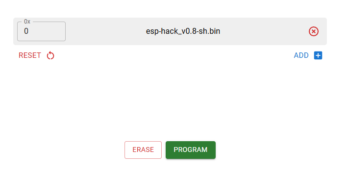
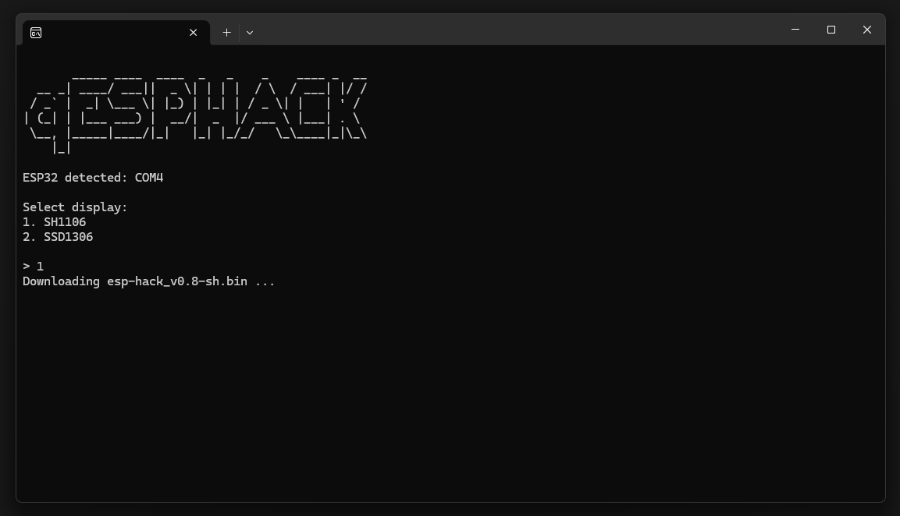
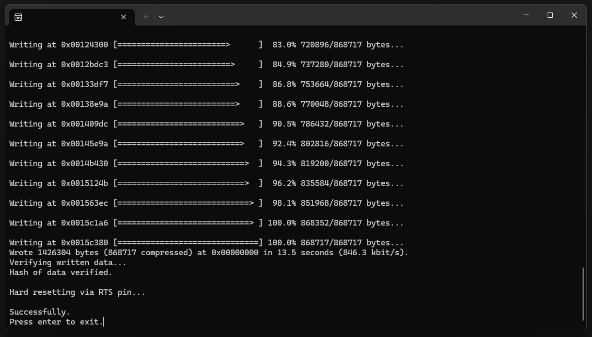

Прошивка ESP32
WIKI-Flasher
Нужен браузер Google Chrome/Microsoft Edge. Подключите ESP32, нажмите кнопку под ваш дисплей и следуйте шагам в окне прошивальщика.
В случае неудачи попробуйте способы ниже.
Web-Flasher
Перейдите на esp.huhn.me, выберите .bin из
Downloads. Выберите .bin и впишите в адрес 0x0. Далее нажмите PROGRAM.

qESP-HACK
Перейдите по ссылке и скачайте qESPHACK.exe.
Далее выберите ваш дисплей, после чего дождитесь окончания установки (прошивки).
qESPHACK сам находит последний .bin под нужный дисплей и
скачивает его.

